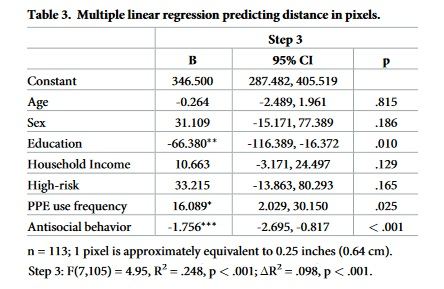

Modeling Exercises¶
These exercises were inspired by and adapted from Neuromatch Academy [CC BY 4.0] and DartBrains [CC BY-SA 4.0 License].
We will continue to use data from O’Connell, et al. (2021) Reduced social distancing during the COVID-19 pandemic is associated with antisocial behaviors in an online United States sample. PLoS ONE.
This study used a linear model to assess whether social distancing behaviors (early in the COVID-19 pandemic) was associated with self-reported antisocial behavior. To measure one index of social distancing behavior, participants were presented with an image of an adult silhouette surrounded by a rectangular border. They were asked to click a point in the image that represents how far away they typically stood from other individuals.
Here is a heatmap showing how far participants reported standing from other individuals in the past week, with dark maroon indicating a higher density of responses obtained from a kernel density estimation. The mean response coordinate, +, represents a distance of approximately 98 inches (8.2 feet; 2.5 m).
For this exercise, we will reproduce the results from O’Connell et al. (2021) that distance kept from others in the past week can be expressed as a function of antisocial behavior, controlling for age, sex, education, household income, high-risk status, and PPE use frequency.
We will reproduce the beta coefficients from Table 3 in the paper.
Table of Contents¶
Key¶
# [INSERT CODE BELOW]: indicates where you should insert your own code, feel free to replace with a comment of your own...: indicates a location where you should insert your own coderaise NotImplementedError("Student exercise: *"): delete this line once you have added your code
Exploring the Data¶
# here we will import all of our packages for the exercise
from scipy.optimize import minimize # finding optimal params in models
from scipy import stats # statistical tools
import numpy as np # matrix/array functions
import pandas as pd # loading and manipulating data
import requests # downloading data from the internet
import ipywidgets as widgets # interactive display
import matplotlib.pyplot as plt # plotting
%matplotlib inline
# please load in the data into a pandas DataFrame,
# then print the first five rows to check that everything loaded correctly
# hint: we've done this in previous exercises
# [INSERT CODE BELOW]
raise NotImplementedError("Student exercise: load OConnell_COVID_MTurk_noPII_post_peerreview.csv file as pandas dataframe, then delete this line")
---------------------------------------------------------------------------
NotImplementedError Traceback (most recent call last)
~\AppData\Local\Temp/ipykernel_2544/3146275134.py in <module>
4
5 # [INSERT CODE BELOW]
----> 6 raise NotImplementedError("Student exercise: load OConnell_COVID_MTurk_noPII_post_peerreview.csv file as pandas dataframe, then delete this line")
NotImplementedError: Student exercise: load OConnell_COVID_MTurk_noPII_post_peerreview.csv file as pandas dataframe, then delete this line
Oh no! Our data contain NaNs (participants either did not answer the question, or did not meet inclusion criteria for certain variables). Let’s get rid of them using the code below:
var_names = ['age_centered',
'sex_1f',
'education_4yr',
'household_income_coded_centered',
'highrisk_self_or_livewith',
'ppe_freq_coded_2',
'STAB_total_centered',
'silhouette_dist_X_min81']
df.dropna(subset=var_names,
inplace=True)
---------------------------------------------------------------------------
NameError Traceback (most recent call last)
~\AppData\Local\Temp/ipykernel_2544/3193289901.py in <module>
8 'silhouette_dist_X_min81']
9
---> 10 df.dropna(subset=var_names,
11 inplace=True)
NameError: name 'df' is not defined
Ordinary Least Squares¶
Now that we’ve loaded in our data, let’s explore their underlying distributions and then fit these data to a linear model by minimizing the mean squared error (MSE)–this is also known as ordinary least squares.
This model can be expressed mathematically as:
Our goal is to estimate the \(\beta\) parameters that explain the relationships in our model.
To accomplish this, we need to do the following:
Convert the dependent variable column (1) in the pandas DataFrame to a numpy array
ywith size(n_subjects, 1).Convert the independent variable columns (7) in the pandas DataFrame to a numpy array
Xwith size(n_subjects, 8), the first column should represent an intercept and contain ones.Define a function
ols()that takes inputsX(numpy array) andy(numpy array), and outputsbeta_hats(list or numpy array).Run the function and find the optimal parameter estimates that fit the model.
# get number of subjects and create X and y
# [INSERT CODE BELOW]
raise NotImplementedError("Student exercise: initialize n_subjects, X and y, then delete this line")
n_subjects = len(...)
# store columns of interest in a single numpy array
# age_centered - age (continuous; 18-65)
# sex_1f - sex (0: male; 1: female)
# education_4yr - education (0: < 4-year degree; 1: >= 4-year degree)
# household_income_coded_centered - household income (continuous)
# highrisk_self_or_livewith - high-risk for serious illness for self or someone the participant lives with (0: no; 1: yes)
# ppe_freq_coded - PPE use frequency (continuous; 1: Never, 5: Always)
# STAB_total_centered - antisocial behavior (continuous)
# silhouette_dist_X_min81 - distance kept from others in past week (continuous)
x0 = np.ones((n_subjects,))
x1 = ... # age
x2 = ... # sex
x3 = ... # edu
x4 = ... # income
x5 = ... # high-risk
# need to re-code variable "ppe_freq_coded"
x6_new = []
for ans in df['ppe_freq_coded']:
if ans == 'Never':
x6_new.append(1)
elif ans == 'Rarely':
x6_new.append(2)
elif ans == 'Sometimes':
x6_new.append(3)
elif ans == 'Often':
x6_new.append(4)
elif ans == 'Always':
x6_new.append(5)
x6 = np.array(x6_new) # ppe (no need to edit this)
x7 = ... # antisociality (stab)
X = np.stack((...), axis=1)
y = ... # distance from others
---------------------------------------------------------------------------
NotImplementedError Traceback (most recent call last)
~\AppData\Local\Temp/ipykernel_2544/2952410950.py in <module>
2
3 # [INSERT CODE BELOW]
----> 4 raise NotImplementedError("Student exercise: initialize n_subjects, X and y, then delete this line")
5
6 n_subjects = len(...)
NotImplementedError: Student exercise: initialize n_subjects, X and y, then delete this line
# using a for loop, please print the means and standard deviations of these variables
# [INSERT CODE BELOW]
raise NotImplementedError("Student exercise: please print the means and standard deviations of these variables, then delete this line")
for name, data in zip(var_names, ...):
print(f'{name}: mean={np.mean(data):.2f}, sd={np.std(data):.2f}')
---------------------------------------------------------------------------
NotImplementedError Traceback (most recent call last)
~\AppData\Local\Temp/ipykernel_2544/3137893597.py in <module>
2
3 # [INSERT CODE BELOW]
----> 4 raise NotImplementedError("Student exercise: please print the means and standard deviations of these variables, then delete this line")
5
6 for name, data in zip(var_names, ...):
NotImplementedError: Student exercise: please print the means and standard deviations of these variables, then delete this line
# define a function called ols() that computes betas for the model
# no need to edit anything here
# see module-02-00_Linear-Modeling for derivation
def ols(X, y):
beta_hat = np.linalg.inv(X.T @ X) @ X.T @ y
return beta_hat
# compute the betas
# [INSERT CODE BELOW]
raise NotImplementedError("Student exercise: compute beta_hats using the function we just defined, then delete this line")
beta_hats = ols(...)
---------------------------------------------------------------------------
NotImplementedError Traceback (most recent call last)
~\AppData\Local\Temp/ipykernel_2544/871437719.py in <module>
1 # compute the betas
2 # [INSERT CODE BELOW]
----> 3 raise NotImplementedError("Student exercise: compute beta_hats using the function we just defined, then delete this line")
4
5 beta_hats = ols(...)
NotImplementedError: Student exercise: compute beta_hats using the function we just defined, then delete this line
Now that we have our fitted parameters, please print our 8 coefficients corresponding to our variables in a for loop below.
# print the names of each variable
x_vars = ['Constant', 'Age','Sex','Education',
'Household Income','High-risk','PPE Use',
'Antisocial behavior']
for variable, beta_value in zip(x_vars, ...):
# [INSERT CODE BELOW]
raise NotImplementedError("Student exercise: complete the string below, then delete this line")
print(fr'coefficient for {...} = {...:.2f}')
---------------------------------------------------------------------------
TypeError Traceback (most recent call last)
~\AppData\Local\Temp/ipykernel_2544/3483120609.py in <module>
4 'Antisocial behavior']
5
----> 6 for variable, beta_value in zip(x_vars, ...):
7 # [INSERT CODE BELOW]
8 raise NotImplementedError("Student exercise: complete the string below, then delete this line")
TypeError: zip argument #2 must support iteration
Awesome! We were able to recover the beta coefficients from the model in O’Connell et al. (2021) using least-squares minimization (which has an analytic solution).
Here is the table for comparison: 
Maximum Likelihood Estimation¶
Above, we made the assumption that the data were drawn from a linear relationship with noise added, and found an effective approach for estimating model parameters based on minimizing the mean squared error.
We treated the noise as simply a nuisance, but what if we factored it directly into our model?
Recall our linear model:
The noise component \(\epsilon\) is often modeled as a random variable drawn from a Gaussian distribution (also called the normal distribution).
The Gaussian distribution is described by its probability density function (pdf):
and is dependent on two parameters: the mean \(\mu\) and the variance \(\sigma^2\). We often consider the noise signal to be Gaussian “white noise”, with zero mean and unit variance:
Before we begin, use the widget below to see how varying the \(\mu\) and \(\sigma\) parameters change the location and shape of samples.
# interactive display (if not using Jupyter Book)
%config InlineBackend.figure_format = 'retina'
@widgets.interact(mu=widgets.FloatSlider(0.0, min=-2.0, max=2.0),
sigma=widgets.FloatSlider(1.0, min=0.5, max=2.0))
def plot_normal_dist(mu=0, sigma=1):
# Generate pdf & samples from normal distribution with mu/sigma
rv = stats.norm(mu, sigma)
x = np.linspace(-5, 5, 100)
y = rv.pdf(x)
samples = rv.rvs(1000)
# Plot
fig, ax = plt.subplots()
ax.hist(samples, 20, density=True, color='g', histtype='stepfilled', alpha=0.8,
label='histogram')
ax.plot(x, y, color='orange', linewidth=3, label='pdf')
ax.vlines(mu, 0, rv.pdf(mu), color='red', linewidth=3, label='$\mu$')
ax.vlines([mu-sigma, mu+sigma], 0, rv.pdf([mu-sigma, mu+sigma]), colors='red',
color='b', linewidth=3, label='$\sigma$')
ax.set(xlabel='x', ylabel='probability density', xlim=[-5, 5], ylim=[0, 1.0])
ax.legend()
Now that we have a model of our noise component \(\epsilon\) as random variable, how do we incorporate this back into our original linear model from before? Consider again our simplified model \(y = \beta \cdot x + \epsilon\) where the noise has zero mean and unit variance \(\epsilon \sim \mathcal{N}(0, 1)\). We can now also treat \(y\) as a random variable drawn from a Gaussian distribution where \(\mu = \beta \cdot x\) and \(\sigma^2 = 1\):
which is to say that the probability of observing \(y\) given \(x\) and parameter \(\beta\) is
Now that we have our probabilistic model, we turn back to our original challenge of finding a good estimate for \(\beta\) that fits our data. Given the inherent uncertainty when dealing in probabilities, we talk about the likelihood that some estimate \(\hat \beta\) fits our data. The likelihood function \(\mathcal{L(\beta)}\) is equal to the probability density function parameterized by that \(\beta\):
Let’s implement the likelihood function \(\mathcal{L}(\beta|x,y)\) for our linear model where \(\sigma = 1\).
After implementing this function, we can produce probabilities that our estimate \(\hat{\beta}\) generated the provided observations.
def loglikelihood(beta_hat, X, y):
"""The likelihood function for a linear model with noise sampled from a Gaussian distribution with zero mean and unit variance.
Args:
beta_hat (float): Estimates of the slope parameters.
x (ndarray): An array of shape (samples,) that contains the input values.
y (ndarray): An array of shape (samples,) that contains the corresponding measurement values to the inputs.
Returns:
ndarray: the likelihood values for the beta_hat estimates
"""
# compute the predicted y based on inputted beta_hats
# here, dot product is equivalent to the weighted sum of values
# (i.e., b0 + b1*x1 + b2*x2 + .. bd*xd)
predicted_y = np.dot(X, beta_hat)
# Compute Gaussian likelihood
pdf = stats.norm.logpdf(y, loc=predicted_y)
return pdf
Finding the Maximum Likelihood Estimator¶
We want to find the parameter value \(\hat\beta\) that makes our data set most likely:
We discussed how taking the logarithm of the likelihood helps with numerical stability, the good thing is that it does so without changing the parameter value that maximizes the likelihood. Indeed, the \(\textrm{log}()\) function is monotonically increasing, which means that it preserves the order of its inputs. So we have:
Now substituting our specific likelihood function and taking its logarithm, we get:
Note that maximizing the log likelihood is the same as minimizing the negative log likelihood (in practice optimization routines are developed to solve minimization not maximization problems). Because of the convexity of this objective function, we can take the derivative of our negative log likelihhood, set it to 0, and solve - just like our solution to minimizing MSE.
Note that this looks remarkably like the equation we had to solve for the optimal MSE estimator, and, in fact, we arrive to the exact same solution!
or
Even though we already know the analytic solution to solve for our \(\hat{\beta}\) coefficients, let’s continue on to solve for them bu minimizing the negative loglikelihood.
# please compute the negative loglikelihood in this new function
# note: this function calls the likelihood() function we defined earlier
# hint: use the function: np.sum()
def minimize_negll(params, X, y):
"""The likelihood function for a model with noise sampled from a
Gaussian distribution with zero mean and unit variance.
Args:
params (list)
X (ndarray): An array of shape (samples,) that contains the input values.
y (ndarray): An array of shape (samples,) that contains the corresponding
measurement values to the inputs.
Returns:
scalar: the neg sum of the loglikelihoods for the beta_hat estimate
"""
# Compute Gaussian loglikelihood
loglik = loglikelihood(params, X, y)
# [INSERT CODE BELOW]
raise NotImplementedError("Student exercise: compute the negative sum of the loglikelihoods computed above, then delete this line")
negLL = ...
return negLL
# specify starting points
init_x = (1,1,1,1,1,1,1,1) # can be anything
# [INSERT CODE BELOW]
raise NotImplementedError("Student exercise: complete the code below to find the optimal params, then delete this line")
# minimize MSE for linear function using scipy.optimize.minimize
mle_results = minimize(..., # objective function
init_x, # estimated starting points
args=(..., ...)) # arguments
---------------------------------------------------------------------------
NotImplementedError Traceback (most recent call last)
~\AppData\Local\Temp/ipykernel_2544/4211904530.py in <module>
3
4 # [INSERT CODE BELOW]
----> 5 raise NotImplementedError("Student exercise: complete the code below to find the optimal params, then delete this line")
6
7 # minimize MSE for linear function using scipy.optimize.minimize
NotImplementedError: Student exercise: complete the code below to find the optimal params, then delete this line
Now, that we have our fitted parameters (now using MLE), please print our 8 coefficients corresponding to our variables in a for loop below.
# print the names of each variable
x_vars = ['Constant', 'Age','Sex','Education',
'Household Income','High-risk','PPE Use',
'Antisocial behavior']
# [INSERT CODE BELOW]
raise NotImplementedError("Student exercise: complete the code below, then delete this line")
# think about where you stored the results of the minimization
mle_betas = ...
for variable, beta_value in zip(x_vars, mle_betas):
print(fr'coefficient for {...} = {...:.2f}')
---------------------------------------------------------------------------
NotImplementedError Traceback (most recent call last)
~\AppData\Local\Temp/ipykernel_2544/2760318698.py in <module>
5
6 # [INSERT CODE BELOW]
----> 7 raise NotImplementedError("Student exercise: complete the code below, then delete this line")
8
9 # think about where you stored the results of the minimization
NotImplementedError: Student exercise: complete the code below, then delete this line
Wow, how cool is that?! We can recover the same parameters by minimizing the loglikelihood (as we did earlier using least squares minimization).
Bonus: Explained Variance¶
Sometimes we want a single metric to quantify overall how well our model was able to explain variance in the data. There are many metrics that can provide a quantitative measure of goodness of fit.
Here we will calculate \(R^2\) using the following formula:
where \(y_i\) is the measured value of the voxel at timepoint \(i\), \(\hat y_i\) is the predicted value for time point \(i\), and \(\bar y\) is the mean of the measured voxel timeseries.
\(R^2\) will lie on the interval between \([0,1]\) and can be interpreted as percentage of the total variance in \(Y\) explained by the model, \(X\), where 1 is 100% and 0 is none.
\(R^2\) is also used to compare model fits, similar to how we \(BIC\) used in the nonlinear modeling tutorial (see Table 3 in paper, which assessed the difference in \(R^2\) across models to select the best-fitting model).
def r_squared(y, predicted_y):
SS_residual = np.sum((y - predicted_y)**2)
SS_total = np.sum((y - np.mean(y))**2)
return 1-(SS_residual/SS_total)
predicted_y = np.dot(X, mle_results.x)
print(f"R^2: {r_squared(y, predicted_y):.3f}")
---------------------------------------------------------------------------
NameError Traceback (most recent call last)
~\AppData\Local\Temp/ipykernel_2544/2045037525.py in <module>
----> 1 predicted_y = np.dot(X, mle_results.x)
2 print(f"R^2: {r_squared(y, predicted_y):.3f}")
NameError: name 'X' is not defined
# Finally, please convert this cell to a Markdown cell.
# Create a Heading named "Notebook Feedback," then delete this text
# and provide 1-2 sentences about your experience with this
# Jupyter Notebook (e.g., Did you enjoy the exercises? Were
# they too easy/difficult? Would you have like to see
# anything different? Were you able to apply some skills we learned during
# class? Anything still confusing?). Finally, please rate your experience
# from (0) "did not enjoy at all" to (10) "enjoyed a great deal." Only your
# instructor will see these responses.
In you are working on Google Colab, go to File > Download > Download .ipynb to download your work. Then, save the file as “Lastname_Exercise01.ipynb” and submit on Canvas.